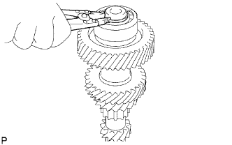
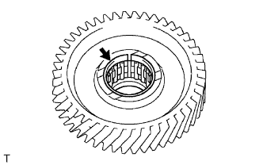

BÁNH RĂNG TRUNG GIAN VÀ BÁNH RĂNG LỒNG KHÔNG SỐ LÙI > LẮP RÁP |
| 1. LẮP VÒNG BI PHÍA TRƯỚC BÁNH RĂNG TRUNG GIAN |
Dùng SST và máy ép, ép vòng bi phía trước mới vào bánh răng trung gian.
Chọn phanh hãm trục sao cho cho độ rơ hướng kính nhỏ nhất.
| Dấu | Độ dày |
| 1 | 2.05 đến 2.10 mm (0.0807 đến 0.0827 in.) |
| 2 | 2.10 đến 2.15 mm (0.0827 đến 0.0847 in.) |
| 3 | 2.15 đến 2.20 mm (0.0847 đến 0.0866 in.) |
| 4 | 2.20 đến 2.25 mm (0.0866 đến 0.0886 in.) |
| 5 | 2.25 đến 2.30 mm (0.0886 đến 0.0906 in.) |
| 6 | 2.30 đến 2.35 mm (0.0906 đến 0.0925 in.) |
|  |
Dùng kìm tháo phanh, lắp phanh hãm.
| 2. LẮP ỐNG TRƯỢT GÀI SỐ NO.3 |
 |
Bôi dầu bánh răng lên bánh răng số 5.
Lắp ống trượt chuyển số No.3 và 2 khoá đồng tốc No.3 vào bánh răng số 5.
Lắp lò xo hãm (phanh hãm chữ C) và lò xo hãm (lò xo hồi) vào bánh răng số 5.
 |
Dùng kìm tháo phanh, lắp phanh hãm vào bánh răng số 5.
| 3. LẮP VÒNG BI BÁNH RĂNG TRUNG GIAN SỐ 5 |
|  |
Bôi dầu bánh răng lên vòng bi bánh răng trung gian số 5 và lắp nó vào bánh răng số 5.
| 4. KIỂM TRA KHE HỞ HƯỚNG KÍNH BÁNH RĂNG SỐ 5 TRỤC TRUNG GIAN |
 |
Lắp bi hãm đệm chặn bánh răng số 5, đệm chặn bánh răng số 5 và bánh răng số 5 trung gian vào bánh răng trung gian.
Dùng đồng hồ so, đo khe hở hướng kính bánh răng số 5.